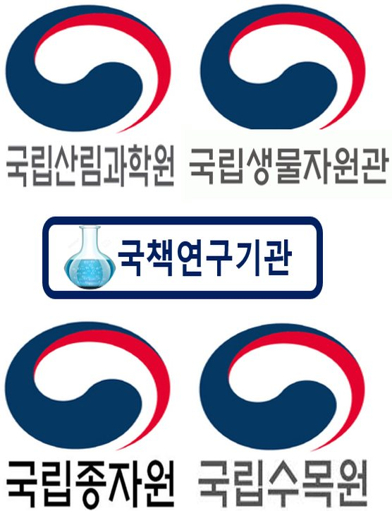
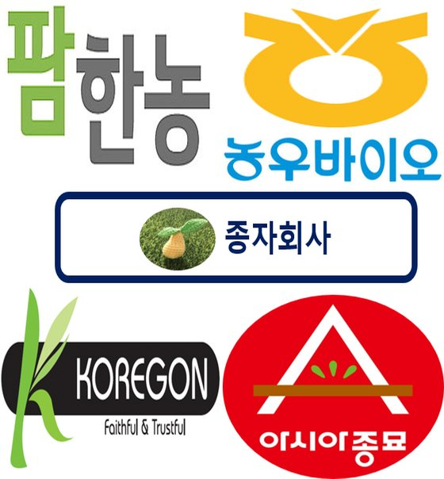

About
연구실 소개
Join Us
대학원생 · 학부연구생 모집
News
연구실 소식
- 아직 등록된 소식이 없습니다.
Career
실험실 졸업 후 진로


기업
종자회사·농자재회사
종자 품질보증, 품질관리, 종자 처리 업무- 팜한농
- 농우바이오
- 아시아종묘
- 코레곤
국책연구소
연구직·기술직 공무원


종자회사·농자재회사
종자 품질보증, 품질관리, 종자 처리 업무연구직·기술직 공무원